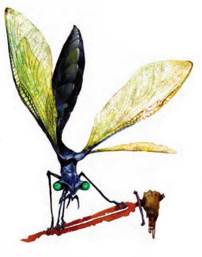

蒂尔巴纳眼蜓(Tirbana
Eyewing) CR 1/2
超小型魔法兽
这个生物看起来像是一只巨大的黑色蜻蜓，以近乎不可思议的优雅从空中滑过，用一双绿色的大眼睛看着你。

|
生命骰: |
1d10+1(6hp) |
|
先攻: |
+3 |
|
速度: |
20尺(4格),飞行60尺(完美) |
|
防御等级: |
15(+2体形,+3敏捷),接触15,措手不及12 |
|
基本攻击/擒抱: |
+1/-10 |
|
攻击: |
近战
啮咬+6(1D4-3加毒)或近战接触+6(迷失之触) |
|
全力攻击: |
近战
啮咬+6(1D4-3加毒)或近战接触+6(迷失之触) |
|
面宽/触及: |
2.5尺/0尺 |
|
特殊攻击: |
迷失之触,反制惑控,毒,类法术能力 |
|
特殊能力: |
全域视觉;黑暗视觉60尺 |
|
豁免: |
强韧+3,反射+5,意志+1 |
|
属性: |
力量5,敏捷16,体质13,智力3,感知13,魅力10 |
|
技能: |
躲藏+11,聆听+3,搜索+0,侦查+7 |
|
专长: |
武器娴熟 |
|
地域: |
|
|
组织: |
|
|
挑战等级: |
1/2 |
|
宝物: |
无 |
|
阵营: |
通常是守序中立 |
|
进化: |
2HD(超小型) |
|
等级调整: |
- |
蒂尔巴纳眼蜓使用蒂尔巴纳语。
战斗:
全域视觉(Ex)眼蜓的眼睛允许它朝任何方向看,在侦查和搜索检定中提供+4种族加成。对手在夹击一只眼蜓时不会获得任何好处。
迷失之触(su)近战接触攻击成功后,眼蜓会使生物在1分钟内对意志豁免受到-1的罚值。多次接触攻击的效果不会叠加。
毒(Ex)：伤口型毒素，强韧DC
13,不过则在聆听和侦查中受到-5的罚值并在5轮中对睡眠效果的意志豁免受到-2的罚值。豁免DC基于体质调整值,包括+2种族加值。
反制惑控(su)眼蜓可以通过触摸一个生物来尝试解除影响这个生物的一个惑控效果。目标可以以原来的DC对一个惑控法术或效果进行一次新的豁免。如果目标生物身上有多个惑控效果,则它会获得对最新获得的惑控效果再进行一次豁免的机会。
类法术(施法者等级1)
每天3次-侦测魔法
性情温和的蒂尔巴纳眼蜓几乎是无害的。它们担当着侦察兵和为虫群看护宿主并确保他们能活到虫卵孵化之时的职责。它们有时会成为法师和术士的魔宠，这也让它们成了唯一能在蒂尔巴纳虫族活动的区域外见到的蒂尔巴纳虫族种类。法师和术士们很喜欢它们侦测魔法和反制惑控类法术的能力。
战略战术：
当单独活动的时候，眼蜓一看到敌人就会逃跑，它会返回虫巢并警告自己的同类。然后它会带着几只昏睡蟑螂返回遇险的地方。它会在战斗中向敌人注入毒素，以让它们更容易被昏睡蟑螂的睡眠术能力影响。
当没有遭到威胁的时候，眼蜓是一种悠闲而和善的生物。它们会开心的跟在遇到的生物后面，并展示出一种温顺的态度以换取他们的投喂甚至是挠翅膀，它们会跟踪一个生物至多两天，期望这些生物能把它们带到某个人丁兴旺的定居点。如果真是这样的话，它们会马上离开，返回自己的巢穴并汇报定居点的位置。
对于玩家角色
眼蜓可以作为进阶魔宠使用(DMG
200)。施法者必须是守序中立或守序邪恶,拥有5级奥术施法者等级,并拥有进阶魔宠专长。